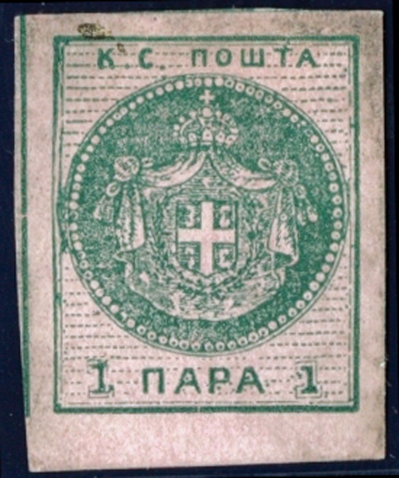
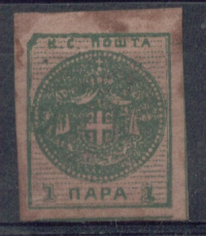
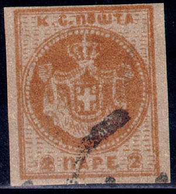
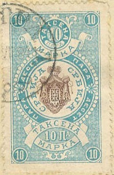
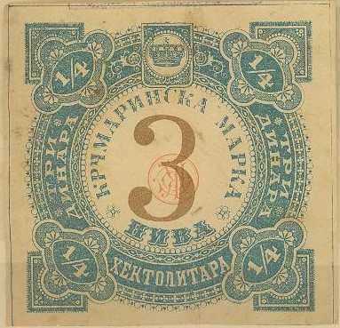

{kind=link}

{kind=link}



Return To Catalogue - Serbia - Yugoslavia
Note: on my website many of the
pictures can not be seen! They are of course present in the
catalogue;
contact me if you want to purchase the catalogue.
1 p green on red 2 p brown on lilac
Value of the stamps |
|||
vc = very common c = common * = not so common ** = uncommon |
*** = very uncommon R = rare RR = very rare RRR = extremely rare |
||
| Value | Unused | Used | Remarks |
| 1 p | RR | RR | Exists in olive on red (paper white on back) and green on red (paper coloured on back) |
| 2 p | RR | RR | Error: 2p green on red (RRR) |
The Serrane guide states that there should be 77 pearls in these stamps, eleven horizontal lines on top and thirteen below. The genuine stamps are engraved.


Genuine sheet?

3rd stamp in the first row of a sheet of 12 stamps (position 3)
of the 1 pa and position 11.

Position 8 of the 2 pa
Position 11 and 12

Although forgeries exist with continuous background lines, this
stamp with (almost) continuous background lines is genuine
according to Jovan Velickovic.
These stamps were printed in blocks of 12 (3 rows of 4 stamps). They can each be indentified by the position on the plate (plating). For example the 3rd stamp in the first row of the 1 p has its left top corner damaged (see image above).
Forgeries, example:

The left and right sides of the arms almost touch the pearls in
these forgeries. According to
http://sksynology.com/country/serb/serb.html, these forgeries
might have been made by the stamp forger Engelhardt
Fohl.

Forgery with too many pearls in the circle and a bogus retangular
cancel.
The next forgeries of are printed on the backside of some 5 c stamps of the 1879 issue Salvador:
Another primitive forgery. A similar forgery can be found on the
Amphilex 2002 Exhibition sheet of Jovan Velickovic.
5 p lilac 10 p blue 20 p brown 30 p green 50 p red
The perforation on these stamps is either 13 x 13 1/2 or 11 1/2.
Value of the stamps |
|||
vc = very common c = common * = not so common ** = uncommon |
*** = very uncommon R = rare RR = very rare RRR = extremely rare |
||
| Value | Unused | Used | Remarks |
| 5 p | ** | * | Error 5 p red: RR |
| 10 p | * | * | |
| 20 p | *** | *** | |
| 30 p | c | * | |
| 50 p | * | * | |
I have seen 2 tete-beche stamps of the 20 p value, also a strip of 3 20 p stamps with the center one inverted (R).

I've seen an imperforate proof of the 20 p brown value.
5 p red 10 p green 20 p brown 30 p blue 50 p brown
These stamps have perforation 11.
Value of the stamps |
|||
vc = very common c = common * = not so common ** = uncommon |
*** = very uncommon R = rare RR = very rare RRR = extremely rare |
||
| Value | Unused | Used | Remarks |
| 5 p | * | * | Also exists in lilac shade and brown shade |
| 10 p | * | * | |
| 30 p | c | c | |
| 50 p | * | * | |
Later issues during World War II

1 p grey 5 p green 10 p orange 15 p violet 20 p yellow 25 p blue 30 p blue 50 p brown 1 D brown 3 D red 5 D grey
These stamps have perforation 11 1/2. A misprint 50 p yellow seems to exist (RR, I have never seen it). These stamps should have small black arms overprinted on it, however, they exist without this overprint (see the above 1 p stamp); according to the Serrane guide, those unoverprinted stamps are not official.
Value of the stamps |
|||
vc = very common c = common * = not so common ** = uncommon |
*** = very uncommon R = rare RR = very rare RRR = extremely rare |
||
| Value | Unused | Used | Remarks |
| 1 p to 25 p | ** | ** | |
| 30 p to 3 D | *** | *** | |
| 5 D | R | R | |
| 15 p | * | c | |
Value of the stamps |
|||
vc = very common c = common * = not so common ** = uncommon |
*** = very uncommon R = rare RR = very rare RRR = extremely rare |
||
| Value | Unused | Used | Remarks |
| All values | R to RR | R | |

Value of the stamps |
|||
vc = very common c = common * = not so common ** = uncommon |
*** = very uncommon R = rare RR = very rare RRR = extremely rare |
||
| Value | Unused | Used | Remarks |
| All values | RR | R | |
(Example, 10 p lilac)
In 1881 the following fiscal stamps were issued:



In this and similar designs exist: 10 p blue and black, 10 p blue and brown (1882), 20 p green and black, 20 p black (1884), 25 p lilac and black, 30 p red and black, 1 D red and black, 3 D brown and green, 5 D blue and brown and 10 D brown and red. These and similar stamps also exist with a circular overprint (in blue, red or black).

Furthermore I have seen the values: 5 pa violet (with red overprint) 10 pa orange (with and without overprint), 10 pa red (with overprint), 10 pa blue (with overprint), 10 pa violet (without overprint), 1 Dinar red (with overprint) and 5 Dinar blue (without overprint).
(Reduced size)
Other design:
In the above design were issued in 1906: 5 p lilac (brown) and black, 10 p yellow and red, 20 p lilac and green, 20 p grey and brown (1911), 20 p orange and red (1913), 50 p brown and orange (1913), 1 D brown and orange, 3 D dark blue and blue (1911), 5 D brown and green, 5 D yellow and red (1913), 10 D brown (1913), 10 D brown and black, 10 D violet and lilac (1911), 20 D red and lilac (1911), 50 D blue and green (1911), 100 D brown (1911), 100 D brown and black (1913).
Other fiscal stamps
Fiscal stamp of Austria, with overprint "K.u.k. Militärverwaltung in Serbien HELLER HELERA" (issued during World War I):

I have also seen the values 2 h, 20 h, 50 h and 5 h on 6 h (other values might exist).

{kind=link}
{kind=link}